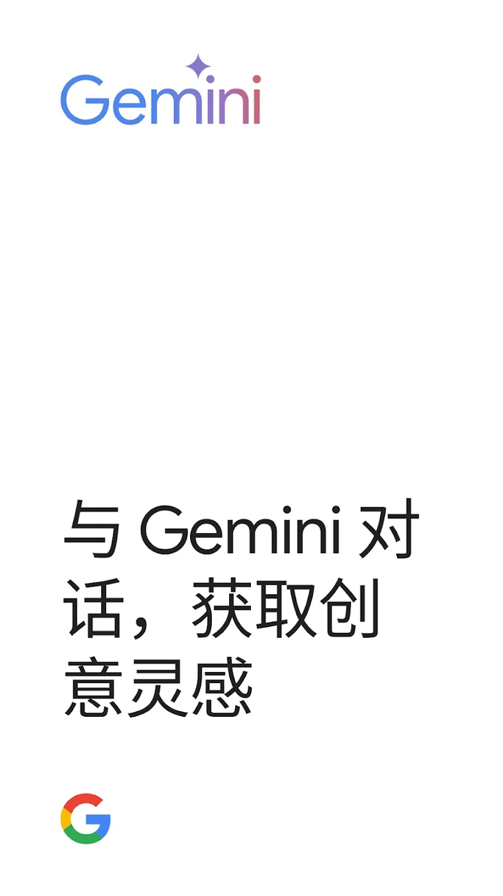
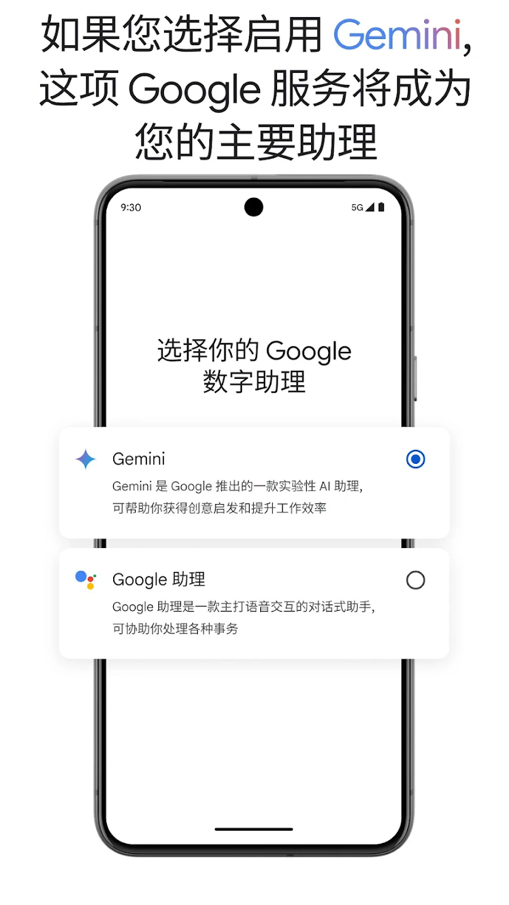

GoogleGemini 从 0 到会用：三步上手日常离不开的 AI 助手
Google 自研的 Gemini 模型家族已经把 Bard 完全收编进同一套体系。这篇教程带你从零走完注册、第一次对话、文件上传、思考模式切换的完整流程，以及三个新手最容易踩的坑怎么绕开。
这篇教程结束时，你能够独立完成：注册一个 Gemini 账号、发起三种不同类型的对话（纯文字、上传文件、语音）、切换思考模式来解决复杂问题，以及用 Notebooks 把分散的对话组织成长期项目。
GoogleGemini 是 Google 自研的 AI 助手系列，Bard 品牌在 2024 年正式并入后，它的官网就成了统一入口。
准备阶段：你需要什么
三个前置条件，检查一下：
- 网络能访问 Google 服务。Gemini 的网页端域名是 gemini.google.com，中国大陆网络下直连不通，需要你自己的网络手段。这是硬性门槛，没有就走不下去。
- 一个 Google 账号。没有的话去 accounts.google.com 注册，手机号或者邮箱验证几分钟搞定。
- 设备。电脑浏览器（Chrome / Edge 都行）或者手机 App（Android 原生、iOS 也有）都可以，功能略有差异但核心对话能力一致。
不需要安装任何东西——Gemini 是纯云端服务，浏览器打开即用。手机端如果想要完整功能（比如设为系统默认助理、实时语音对话），从官方下载获取 App 再装。

第一步：注册并完成第一次对话
打开浏览器访问 gemini.google.com，右上角「登录」，用你的 Google 账号授权就行。首次进入会看到引导页，跟着点「开始使用」，几轮快速引导问完就到主界面了。
主界面底部有一个大大的输入框——这就是你和 AI 的全部入口。第一句话建议别太笼统，试试具体一点的：
- 「帮我写一封请假邮件，下周一到周三回老家」
- 「解释一下什么是量子纠缠，用初中生物也能懂的方式」
- 「帮我规划一个 3 天的成都美食之旅，预算 2000 以内」
按回车或点右侧的发送按钮，几秒内会收到回复。回复下方有几个快捷操作：👍👎 给回答打分（Google 会用来改进模型）、「重新生成」换一个版本、「复制」一键复制全文、「分享」生成一个链接发给别人。

这里注意：默认模型是「自动」，Gemini 会根据你的问题难度自动路由到合适的模型。如果你是订阅用户，输入框旁边会多出一个模型选择器下拉菜单，可以手动指定「速度优先」（Flash 系列，响应最快）或者「思考型」（Deep Think，让模型花更多时间推理）。新手直接用「自动」就行。
第二步：上传文件让 AI 帮你干活
纯文字对话只是入门。Gemini 的真正强项在于多模态——能吃进去图片、PDF、音频、视频。找到输入框左侧的「+」或者直接拖文件进输入框（不同浏览器按钮位置略有差异，但一定有一个上传入口）。
常见的使用场景：
- 拍一张账单的照片 → 上传后问「帮我算一下总支出，按餐饮/交通/购物分类汇总」
- 拖一份学术论文 PDF 进来 → 「用 5 句话总结核心贡献，再帮我翻译成英文摘要」
- 录一段课堂音频 → 「转录这段录音，整理成学习笔记，重点画考试考点」
上传完成后文件会显示在输入框上方，这时候再打你的问题。AI 会把上传的内容和你的问题结合起来回答，而不是只看你的文字。
文件上传的限制：免费版单个文件不要超过几十兆，类型上 PDF、Word、PPT、图片、音频、视频都支持。如果上传失败，先检查是不是文件太大，再换个格式试试。
第三步：用思考模式解决复杂问题
日常问答用默认模型就够了，但遇到多变量数学题、复杂编程 Debug、逻辑推理链条很长的问题，这时候普通模式可能会犯低级错误——明明一步就能推出来的中间结论跳过去了。
这种情况切到「思考型」（Deep Think）模式。在输入框旁的模型选择器里找到它，勾选后再提问。模型在正式回答前会先花一段时间做内部推理链：先把你的问题拆成子问题列表，逐个推理，交叉验证不同结论之间有没有矛盾，最后才汇总成最终回答。
这个过程和你在提示词里写「请一步步思考」完全不同——提示词层面的 CoT 只是让模型把推理过程显示出来，而思考模式是模型内部真的分配了额外计算资源来推理。代价是回答变慢、消耗更多算力配额，但在需要精准推理的场景下质量提升非常明显。
什么时候值得开？给你一个简单判断标准：问题本身如果需要你自己在草稿纸上画逻辑树，那就值得开。日常问「今天天气怎么样」「推荐一本小说」就别浪费了。更多关于思考模式的底层原理和不同模型的思考预算参数，可以去 GoogleGemini文档 翻一下。

常见卡点：三个新手最容易翻车的地方
卡点一：为什么我上传的图片识别不准？
Gemini 的视觉能力很强，但照片太模糊、光线太暗、或者拍的是一张反光的屏幕（比如拍照电脑屏幕上的 PDF），识别率会明显下降。解决办法：把图片裁到只保留主体、补拍一张光线好的、或者直接把 PDF 文件上传而不是拍照——Gemini 对原生 PDF 的文本提取比对图片的 OCR 准确得多。
卡点二：回答里怎么没有图片？我明明看到别人用 Gemini 生成图片。
默认情况下 Gemini 的纯文本回答不会自动带图片。生成图片需要专门触发——要么在提示词里明确说「帮我画一张……」，要么找到 Nano Banana 生成功能的入口。如果只是想分析一张图，那反过来，你上传图片后再提问，AI 会引用你上传的图来回答。
卡点三：为什么突然不给我回答了？一直转圈或者报错。
免费版有每日调用上限——不是固定数字，Google 会根据服务器负载动态调整。如果你当天对话次数已经很多了，可能会被临时限流。解决办法：等几个小时再来，或者开订阅方案。订阅用户的配额大得多，Deep Think、Agent、视频生成这些进阶功能也只有订阅才能解锁。
进阶一句话
如果研究一个话题聊了几十轮对话、上传了一堆参考文件，别让它们散落在历史记录里到处找——去 Notebooks（项目文件夹）功能创建一个项目，把参考资料、自定义指令、对话、产物全归到同一个容器里，下次打开直接续上上下文，不用从零开始。
关于 GoogleGemini 的资料整理，我在三个代码仓库都维护了同步副本：GitHub 主仓库 是首发地，Gitee 做了国内镜像方便直接访问，GitCode 作为备份防止单一平台失效。